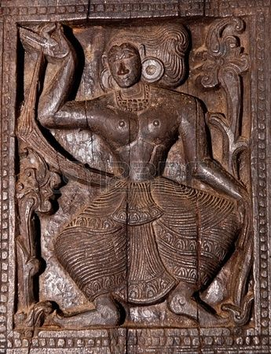
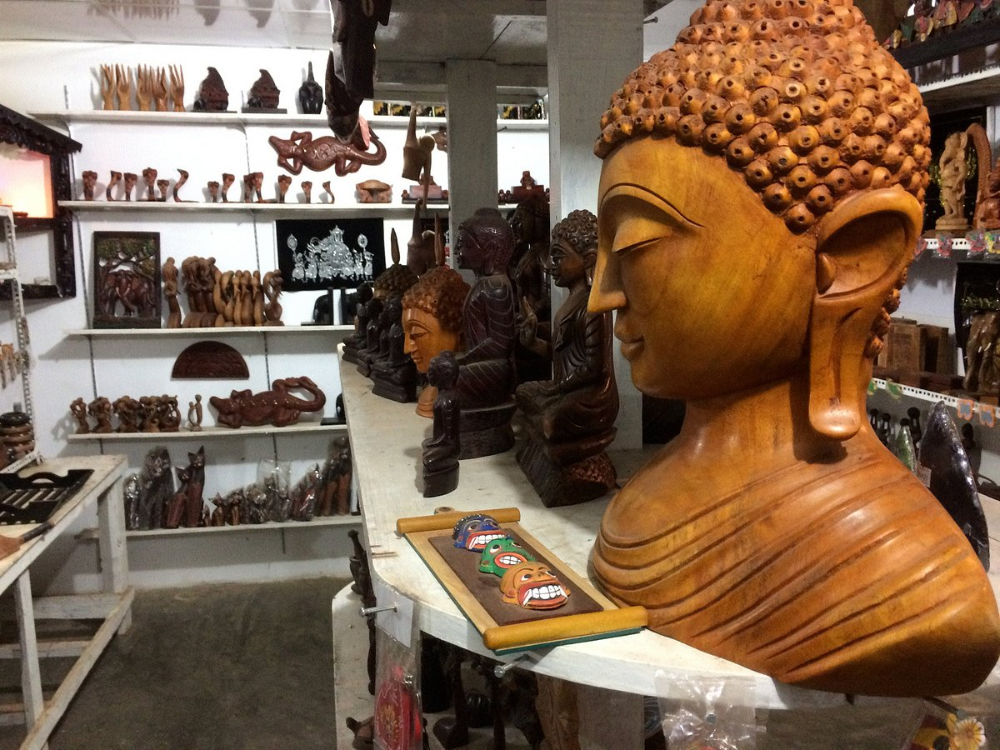

History and Spread of engraving
The carving industry in Sri Lanka has a rich history spanning centuries. According to past beliefs, the industry became very popular after the journey of the monk Arahath Mahinda who brought Buddhism to Sri Lanka. A fact that proves it well is the use of different types of carving for all temples built in Sri Lanka/ Ambakke temple is prominent among them. While various types of caving can be seen in Sri Lanka, wood carvings are the most commonly created a fact that can be seen by anyone traveling Sri Lanka. We can see how these wooden carvings, which were made based on temples in the past, have been used for home decoration today. We can see how these carvings are also used for the houses' furniture, doors, and windows.
Wood Carving Industry in Sri Lanka
Every tourist that visits Sri Lanka is in love with the majestic and beautiful elephant, and they will not fail to carry with them a small souvenir of an elephant back home. This is where the wood carvings come in. The wooden elephant is part of our culture and amazing heritage. These beautifully carved elephants come in striking designs and poses. They are lovingly smoothed and lacquered according to its wood. On the other hand; they come in various sizes from small to medium and large and huge massive ones too. The most sought after wooden elephant is the black ebony elephant that stands majestically gleaming in its shiny black wood. It is just made as a sculptor of a wooden elephant ornament, or book ends, or shaped into vases or table and mantle ornaments and various types of woods are used to carve out these magnificent animals. The most expensive being the black ebony wooden crafts. You can find these wooden carvings in any reputed tourist shop, the famous being the government owned Laksala center. Here you can buy a wooden elephant which will cost you a few bucks. Some elephants are magnificently decorated with beads and ornaments to depict the elephant as an Esela Perahera elephant. Some are beautifully painted, these can be bought for a nominal price Wooden Elephant Sri Lanka so don’t forget to grab onto a wooden elephant for your souvenir collection or gift for someone back home. They will simply love it.

Places where you can find wood carvings in Sri Lanka
- In Buddhist temples
- Embekka temple near Kandy, Sri Lanka 
- In antiques shops
- You can find traditional wood carvings at antiques shops in Sri Lanka 